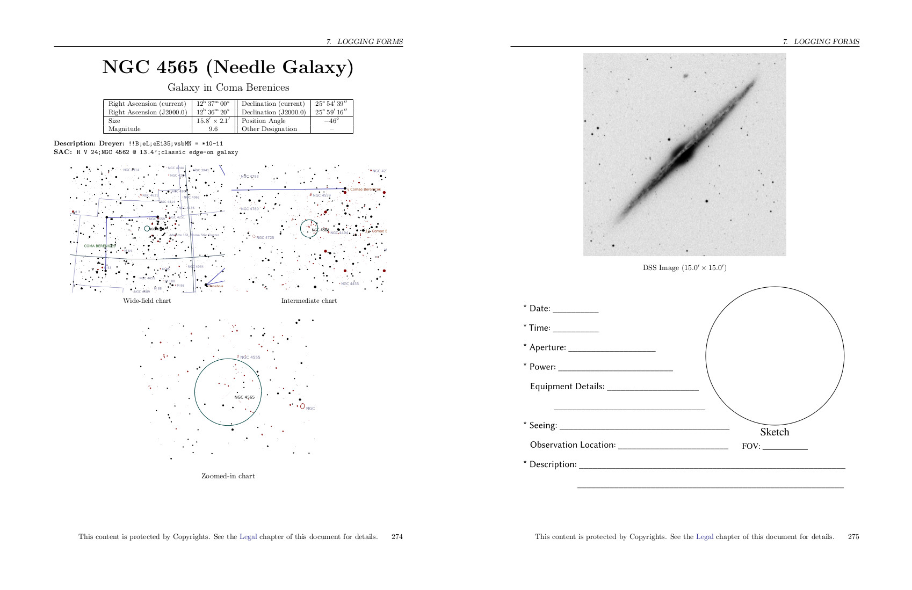
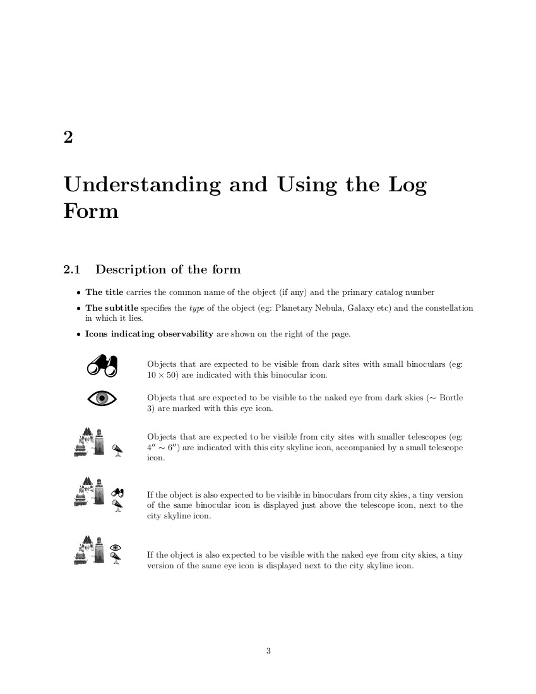
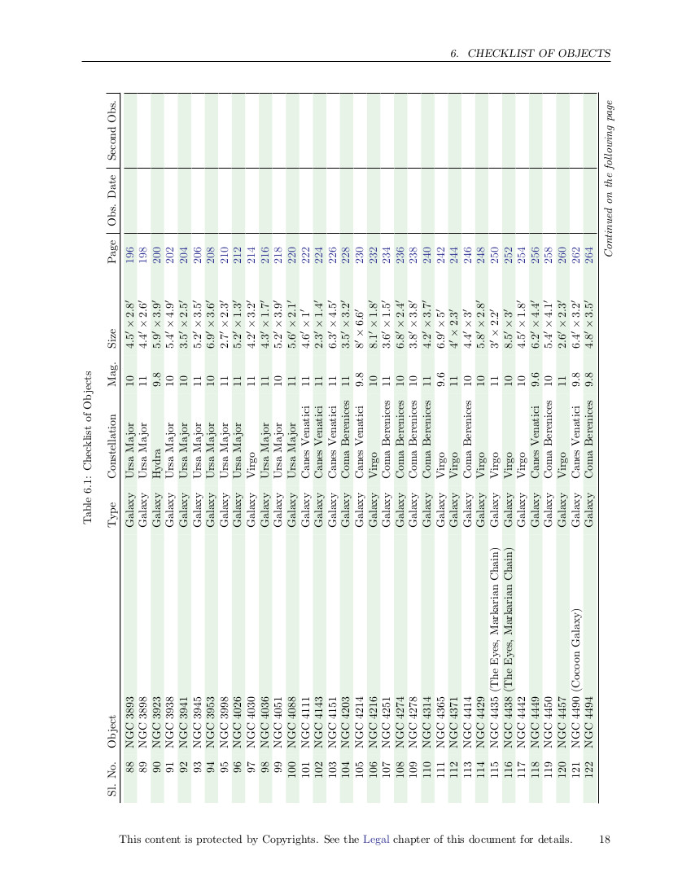
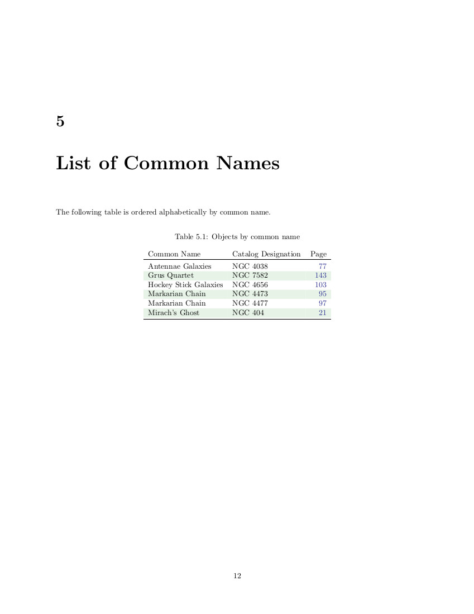
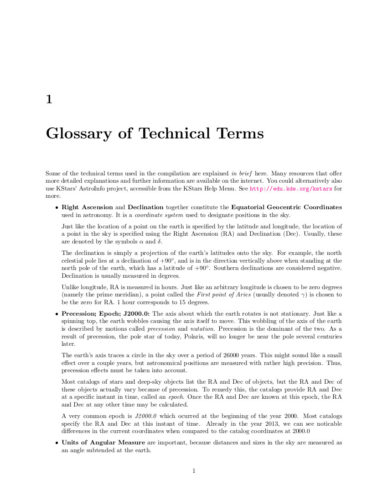
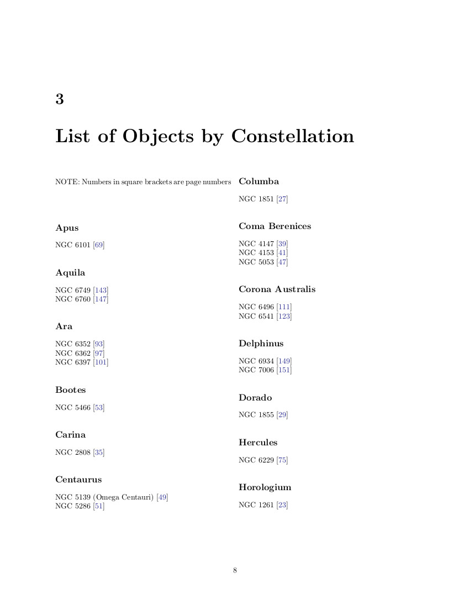
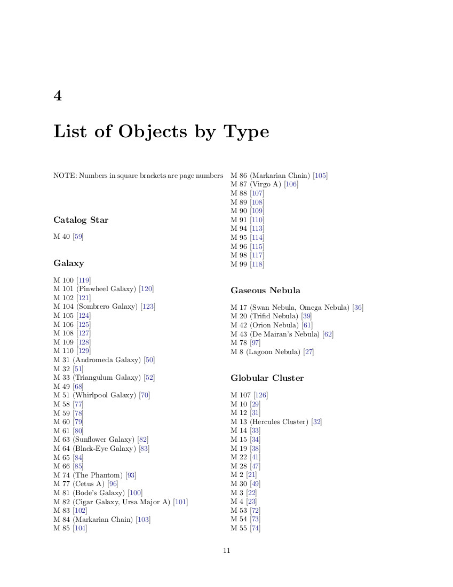

The Astronomy Logbook Project
Below are actual page samples from the PDF logbooks. Click on the images to enlarge them.
 Sample from the Messier logbook.
Sample from the Messier logbook.




Books have instructions and guidelines.

Index-cum-checklist of objects with data and page numbers.

Table listing common names.

Glossary of technical terms.

Index of objects by constellation.

Index of objects by type.© The Astronomy Logbook
Project. 
We support Creative Commons and free(dom) culture! Note however, that not all the logbooks could be licensed under creative commons, and not all content on this site is under Creative Commons
This webpage is made using Bootstrap. Bootstrap is © Copyright 2014 Twitter and is released under the MIT license.